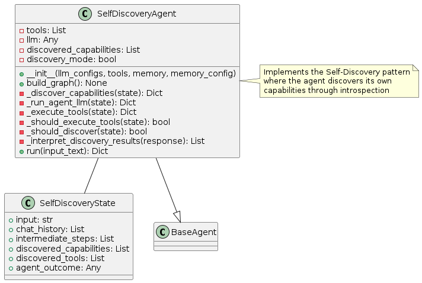
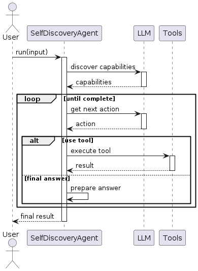
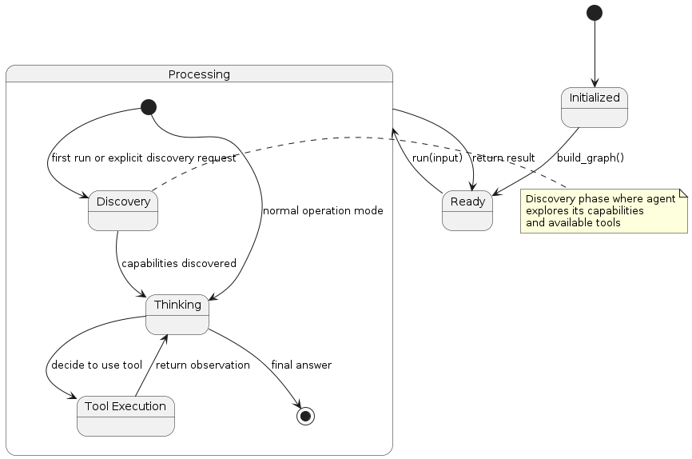

Self-Discovery Pattern
Overview
The Self-Discovery pattern enables an agent to discover and understand its own capabilities through introspection. Unlike other patterns where capabilities are predefined, this pattern allows the agent to:
Discover Capabilities: The agent examines available tools and its own abilities
Build Mental Model: It creates an understanding of what it can do
Apply Appropriately: The agent selectively uses discovered capabilities based on context
Adapt Over Time: It can discover new capabilities as they become available
This pattern is especially powerful for creating adaptable agents that can work in changing environments or with evolving tool sets.
Diagrams
Class Structure

The Self-Discovery pattern is implemented through:
SelfDiscoveryState: Extends the basic agent state with discovered capabilities and tools
SelfDiscoveryAgent: Implements the discovery, reasoning, and execution logic
BaseAgent: The abstract base class from which the self-discovery agent inherits
Execution Flow

The execution flow follows:
User provides input to the SelfDiscoveryAgent
During first run or when triggered, the agent enters discovery mode
Agent identifies its capabilities by introspection
Available tools are enumerated and understood
Using this self-knowledge, the agent proceeds with task execution
The agent can use any discovered tool as needed
Final answer is returned to the user
State Transitions

The Self-Discovery pattern transitions through these states:
Initialized: Agent is created but not yet ready
Ready: Agent is ready to process input
Processing: Agent is actively working on the task
Discovery: Agent is discovering its capabilities (on first run or when requested)
Thinking: Agent is reasoning about what to do next
Tool Execution: Agent is using one of its discovered tools
Final state is reached when the agent determines a final answer
Use Cases
Flexible Tool Integration: When available tools may change over time
Extensible Systems: For systems where new capabilities are added frequently
Contextual Intelligence: When different capabilities are needed based on context
Zero-Shot Tool Use: For agents that need to use unfamiliar tools effectively
Adaptable Assistants: For assistants that need to discover what they can do in different environments
Implementation Guide
Here’s a simple example of using the SelfDiscoveryAgent:
from agent_patterns.patterns import SelfDiscoveryAgent
from agent_patterns.core.tools import ToolRegistry
from agent_patterns.core.memory import CompositeMemory, ProceduralMemory
from langchain.tools import tool
# Define tools - these could be added dynamically
@tool
def search(query: str) -> str:
"""Search for information about a topic."""
return f"Results for {query}: Some relevant information..."
@tool
def calculator(expression: str) -> str:
"""Calculate the result of a mathematical expression."""
try:
return f"Result: {eval(expression)}"
except:
return "Error in calculation"
# Create tool registry
tool_registry = ToolRegistry([search, calculator])
# Create memory system with procedural memory for storing discovered capabilities
memory = CompositeMemory({
"procedural": ProceduralMemory(),
})
# Configure the LLMs
llm_configs = {
"default": {
"provider": "openai",
"model": "gpt-4o",
"temperature": 0.7
}
}
# Initialize the Self-Discovery agent
agent = SelfDiscoveryAgent(
llm_configs=llm_configs,
tool_provider=tool_registry,
memory=memory,
discovery_mode=True # Enable discovery mode on first run
)
# Run the agent - it will discover its capabilities first
result = agent.run("I need to calculate the square root of 144 and then find information about that number.")
print(result)
# Add a new tool dynamically
@tool
def translate(text: str, language: str) -> str:
"""Translate text to another language."""
return f"Translation of '{text}' to {language}: [translated text]"
tool_registry.register_provider(translate)
# Run again with discovery mode to find new capabilities
agent.discovery_mode = True
result = agent.run("Translate 'Hello world' to French.")
print(result)
Example References
The examples directory contains implementations of the Self-Discovery pattern:
examples/self_discovery_basic.py: Basic implementation showing capability discoveryexamples/self_discovery_dynamic.py: Advanced implementation with dynamic tool registration
Best Practices
Design discovery prompts that encourage thorough examination of capabilities
Store discovered capabilities in procedural memory for future use
Implement periodic rediscovery to adapt to changing environments
Include metadata about capabilities (limitations, requirements, etc.)
Use clear and detailed descriptions for tools to aid in self-discovery
Implement versioning for capabilities to track changes over time
Include discovery of LLM capabilities, not just external tools